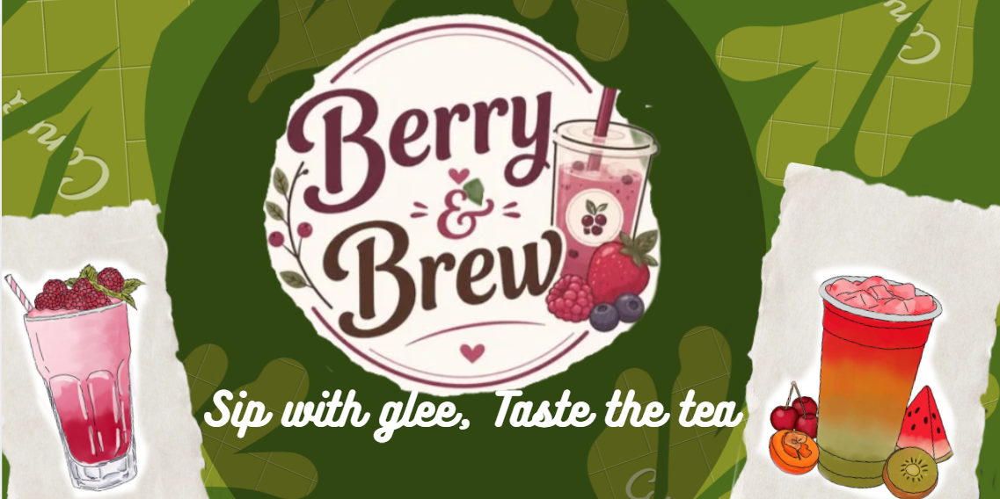
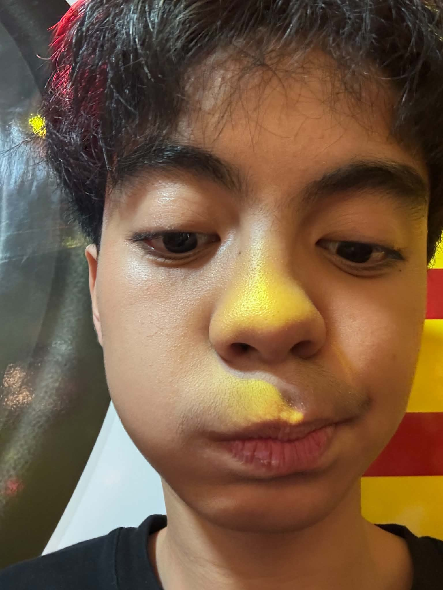
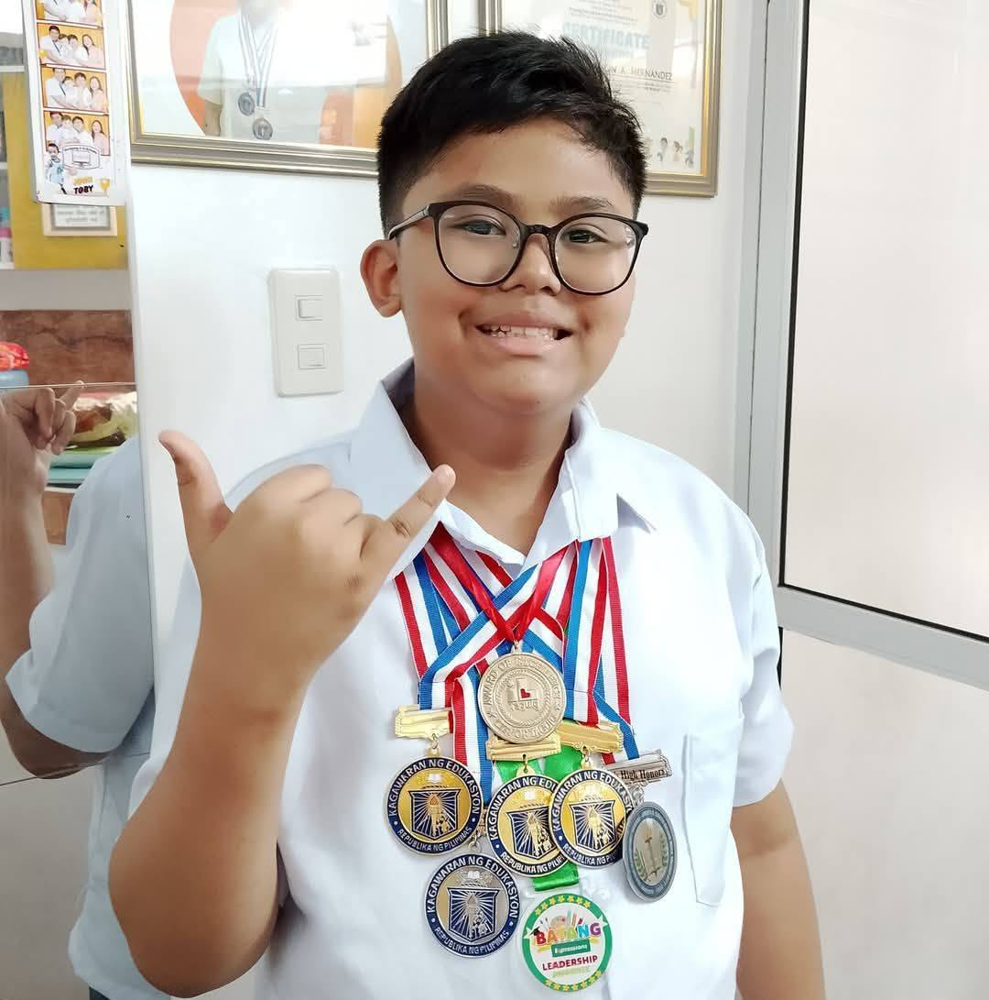
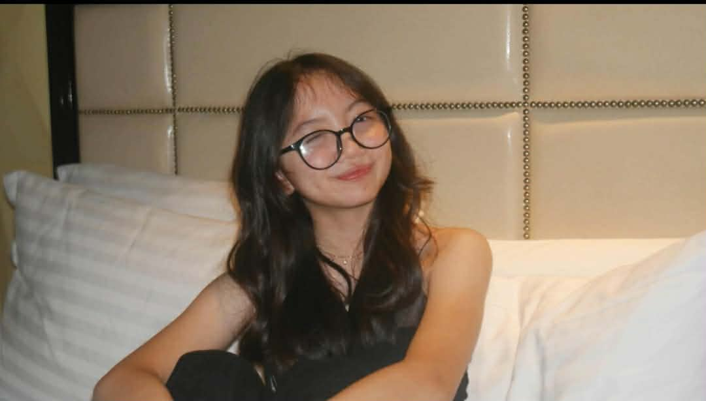
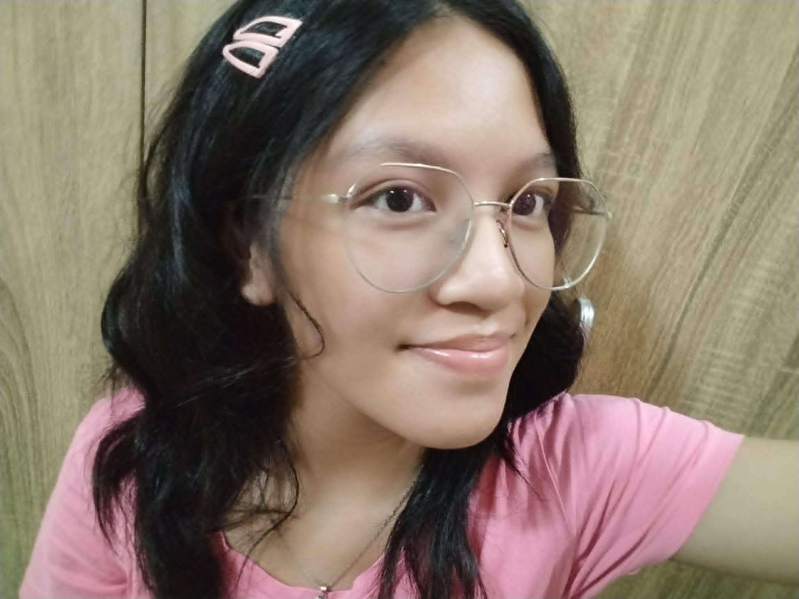
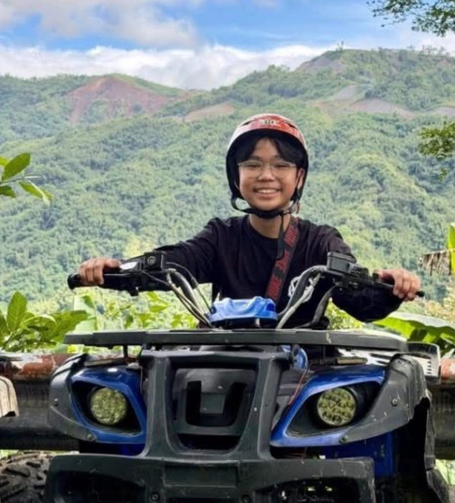

I’m 13 years old, my birthday is on August 29, and i like sleeping. I enjoy dancing and participate in some dancing activities, i’ve also really took interest in journalism writings, such as Collaborative desktop publishing, and radiobroadcasting. I also like to sing once and a while.

13 years old, born on January 2, 2013, likes coding, eating, chess and some other things, not much really, made this website for them.

Hello! My name is Chelzea Lei R. Mariano. I am one of the co founders of Berry and Brew. I helped think and create some of the drinks in our menu and I also illustrated some of the drink designs. I’m excited to share our product with each and every one of you!

As a co-founder of our beverage business, I served as the graphic designer who created the artwork for our drink menu, and signature drink, I also helped with some ideas for developing its flavor combinations.

I’m 13 years old. My name is John Dominic Carrillo, but most people call me Dom. My birthday is on November 21. I enjoy taking photos because I like capturing memorable moments from different perspectives. I also love playing the electric guitar and enjoy learning and performing different songs. I enjoy participating in church activities, and I am also one of the altar servers who serve at Taguig Science High School. These activities make up a big part of who I am and what I enjoy doing.
Good day, dear customer! It seems that this co-founder has yet to give their message to you all, sorry for the inconveniece to those who may have wanted to know them more!